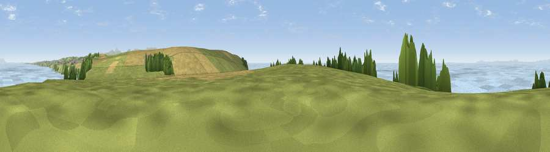

Viewpoint near Sandwith
#3049 in England · top 37% of its area beats it · near SandwithThe view, rendered

A 360° render of this exact spot computed from the terrain model, tree cover and land cover — summer colours, afternoon light, calibrated against photographs of famous viewpoints. Real trees, hedges and buildings will differ in detail.
The panorama
Grey silhouette: terrain skyline in each direction (720 bearings, Earth curvature and refraction included). Dashed green: skyline with trees (+15 m) and buildings (+8 m) as obstacles. Blue strip: how far the ground is visible on each bearing.
Where the view opens
Wedge length = distance to the farthest visible ground on that bearing (vegetation-aware). Rings at 10, 25 and 50 km.
What fills the view
52% water · 26% grassland · 17% cropland · 4% woodland · 1% built-up
Angular shares of the visible panorama (visual magnitude), not map area. Landscape diversity 0.51 (0–1 Shannon).
Key numbers
More beautiful places nearby
The staircase of upgrades: each row has a higher view potential than everything closer. Driving times are estimates from straight-line distance, calibrated against real road routing — check an actual route before setting out.
| Place | Direction | Drive | Score |
|---|---|---|---|
| Viewpoint near Sandwith | ESE · 1 km | ~3 min | 80.2 |
| Hannah Moor | SE · 2 km | ~5 min | 83.6 |
| Viewpoint near Cleator | E · 9 km | ~18 min | 86.1 |
| Crag Fell | E · 15 km | ~27 min | 89.1 |
| Ullock Pike | ENE · 33 km | ~51 min | 89.4 |
| Long Side | ENE · 33 km | ~51 min | 89.5 |
| Viewpoint near Finsthwaite | ESE · 52 km | ~73 min | 90.3 |
| The Knoll | S · 431 km | ~406 min | 91.0 |
54.51653, -3.63511 · source: screening · position refined by local search. Computed location — check access rights before visiting.